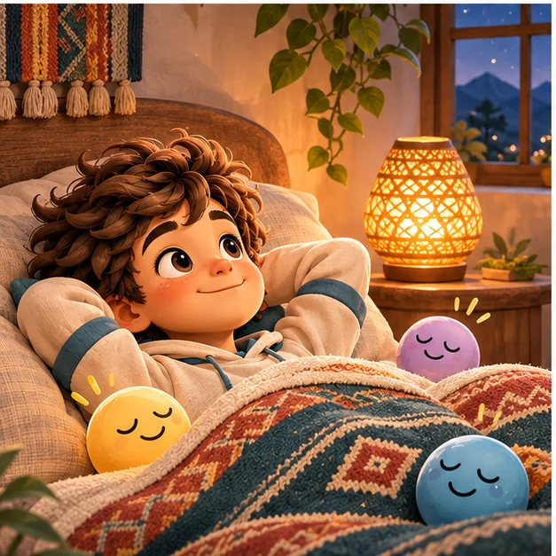

Familia Plus · escucha voluntaria
Biblioteca de ondas
Fondos sonoros continuos para distintos momentos. La animación permanece durante las pausas para indicar que la experiencia sigue disponible; el silencio también es una elección válida.

5 ambientes sonoros